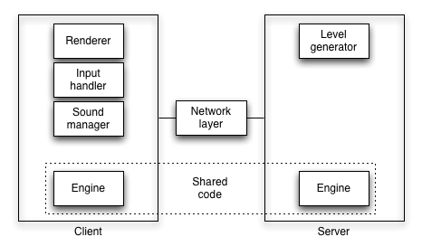

Developing multiplayer HTML5 games with node.js
One day I had some friends over at my house introducing me some cool iPad games. One of the games was Osmos, developed by an Canadian indie studio called Hemisphere Games. You control a little blob that floats in 2D space, and the only thing your blob can do is shoot pieces of itself in a given direction, which propels it in the opposite direction. The rules of the game are simple, the main rule being that when two blobs collide, the larger one will consume the smaller one. The rest of the rules pretty much follow directly from conservation of mass and energy. See for yourself - it's way better than it sounds!
Osmos really caught my attention because of its simple but engaging gameplay, meditative pace and distinct lack of multiplayer support, which struck me as a potentially very interesting problem to tackle. And so, Osmus (mu for multiplayer) was born as a browser-based multiplayer Osmos clone.
How it works
When a browser navigates to the osmus landing page, the server sends the new client the current state of its universe, which is composed of blobs with randomized velocities. At this point, the client can passively watch the game progress, but of course, can also join the game as a player controlled blob. Once a player joins, he can click or tap (on mobile devices) the canvas to shoot off a new blob.
As the game progresses, the server decides when someone (possibly one of the autonomous blobs) is victorious, at which point, players are notified and the game is restarted.
The rest of this post is about some development-related details. I've had to take the game offline because it was too expensive for me to keep running on my VPS. However I did record a video:
Game architecture
I wrote osmus to be split into distinct, loosely coupled components both to make the codebase more approachable for other contributors, and to make it easy to experiment with interchangeable technologies.

Osmus uses a shared game engine that runs in both the browser and on the server. The engine is a simple state machine whose primary function is to compute the next game state as a function of time using the rules of physics defined within.
Game.prototype.computeState = function(delta) {
var newState = {};
// Compute a bunch of stuff based on this.state
return newState;
}
This is a pretty narrow definition of a Game Engine. In the game developer world, what's typically meant by a game engine may include anything from a renderer, sound player, networking layer, etc. In this case, I've made very clear divisions between these components, and the osmus game core only includes just the physical state machine, so that both client and server can compute the next states and be reasonably synchronized in time.
The client is composed of three main components: a renderer, input manager and sound manager. I built a very simple canvas-based renderer that draws blobs as red circles, and player blobs are green ones. My colleague Arne Roomann-Kurrik wrote an alternative three.js based renderer with some epic shaders and shadows.
The sound manager handles playback of both sound effects and background music
(taken from 8-bit Magic). The current implementation uses audio tags,
with two <audio> elements, one for the background music channel, and one for
the sound effects. There are known limitations of this approach, but given the
modularity of my implementation, the sound implementation can be swapped out
for one that uses Chrome's Web Audio API, for example.
Finally, the input manager handles mouse events, but can be replaced with one that uses touch instead, for a mobile version. In the mobile context, it will likely make sense to use CSS3 transformations instead of canvas, since CSS3 is hardware accelerated on iOS, while HTML5 canvas still isn't, and WebGL is not implemented.
Speaking of mobile, I was happily surprised that osmus works pretty well on iPad, especially on an iPad 2 running the latest iOS version. This is really great, and one of the tangible benefits of writing games for the open web.
Networking is hard
From a networking perspective, a game is a rather ambitious project that requires seamless real-time synchronization between clients. Because of this, bidirectional client-server communication is essential. In the modern web stack, this is provided by Web Sockets which supply a thin layer above TCP and hide a lot of gory details from the implementer. To further hide network stack details, I use the socket.io library, which provides a dead simple event-driven abstraction for the whole thing. Unfortunately there's currently no support for binary data, which would greatly compress message size, perhaps by an order of two magnitudes in the case of osmos.
From a bit of research which included this nice talk from Rob Hawkes, it became clear that to have any sort of shared experience, the simplest model is to have the true game state on the server, and have clients periodically sync with it. The main trade off here is synchronization quality vs. network traffic required.
On one extreme, a game can be written by having the game logic entirely on the server and sending updates (or perhaps even simply screenshots) to the client at 60 FPS, but this is generally not feasible due to the sheer amount of bandwidth required for this model. On the opposite extreme, you can imagine a network architecture in which clients connect, get initial state, and are then largely autonomous.
In practice, there is a happy medium in which many multiplayer games fall, which means replicating non-trivial code in both the client and the server. Luckily, now that we're in the ubiquitous JavaScript era, there is no longer a need to duplicate functionality, but can instead share code by writing the game engine in JavaScript, and then running it in both a browser on the client, and in node.js on the server.
There's a lot more to be written about writing the multiplayer bits of osmus, which will hopefully turn into a more detailed article at some point in the future.
Shared JS modules
As mentioned earlier, osmus uses a physics engine that's shared between clients and the server. One might imagine that sharing JavaScript code between the two would be a breeze, but it's not that simple.
Module loaders are a mess. There's the CommonJS spec, RequireJS library and node.js require system, none of which play nicely together. If you want to share code between client and server (one of the big wins of JS on the server) without a module loader, you can use this somewhat hacky pattern:
(function(exports) {
var MyClass = function() { /* ... */ };
var myObject = {};
exports.MyClass = MyClass;
exports.myObject = MyObject;
})(typeof global === "undefined" ? window : exports);
This hack relies on the fact that node.js defines a global object while the
browser does not. With the hack, node.js require() will be happy, and you can
also include the file in a <script> tag without polluting your namespace,
assuming of course, that no other JS pollutes your namespace with a
window.global object!
Unfortunately this approach only works well for one shared module. As soon as
you have multiple modules depending on each other (via requires in node-land,
and globals in browser-land), the difference between node's namespacing and
browser's inclusion becomes painfully apparent and requires more hacky
workarounds.
Another approach is to use browserify to bundle all JS and emulate requires in the browser. This approach relies on node.js to serve the generated JS, which is not ideal, since static files should be served by a webserver optimized for the purpose. However node.js + browserify can be configured to compile JS that can be served statically without relying on node to serve it. This approach introduces some overhead:
- Extra build step for deploying.
- Performance overhead of whatever mechanism browserify uses to support
require()calls.
Overall this approach sounds better to me, and I hope to try it out in a future version of osmus.
Your turn
Today I'm releasing osmus as a completely open source HTML5 game. Feel free to fork it to your heart's content. Oh, and for other game related goodness, check out this article on HTML5 canvas performance recently posted on html5rocks.